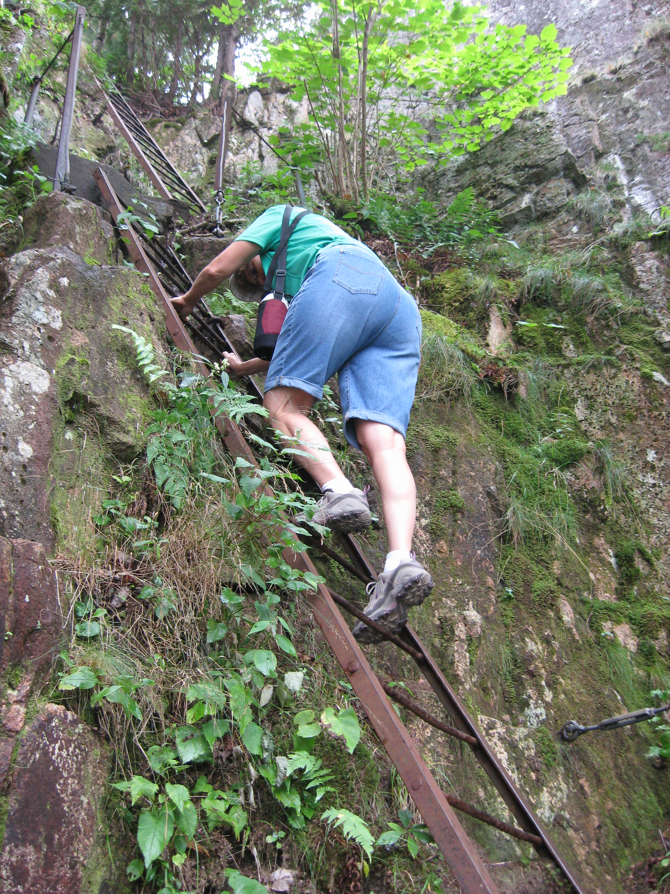
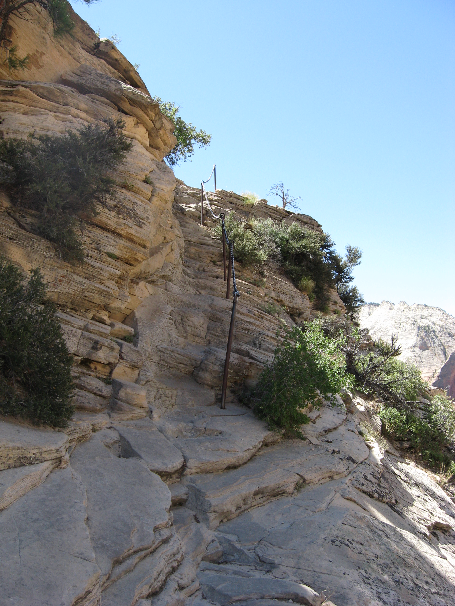

Although I have an advanced degree in Electrical Engineering, I have been working as a computer engineer for most of my career. In that capacity I have acquired skills in the following areas:
Much of my programing skills and knowledge of real time operating systems has been self taught and are primarily C/C++ based; however, I do have Java programming skills, as well as experience with scripting languages for data collection and test automation (UNIX shell, Perl, Expect). Early in my career I was given the task of modifying a real time operating system written for an 8 bit micro-processor. Throughout my career I have demonstrated the ability to quickly acquire skills with other technologies, programming languages and processes as needed.
My software dvelopment experience spans all phases of the SDLC including software architecture, requirements, design, coding and testing through system level as well as product support in large distributed systems in the telecommunications domain. This includes some exposure to a cloud based Radio Network Controller product running on commercial hardware. The products I have developed were done using UNIX/Linux based development tools.
All of my development experience has been in a team environment where collaboration with other team members and communication, both written and verbal, is a key to success. The software for these products is developed by a team of engineers over many years with each software release adding new functionality. In many cases I have served as a technical leader of a team of 3 to 8 engineers delivering a feature to a new release. I also have experience as a SQA Engineer and in that capacity managed several vendors’ compliance with wireless industry standards.
Recently, I have been doing performance analysis and maintenance of a live wireless network for a large carrier. This is done by analyzing the trends of Key Performance Indicators and counters to identify failing scenarios. These indicators help to isolate the failure to a network component and direct software developers to provide a fix. In this capacity I have served as an incident manager facing the customer and interfacing with software development teams.
Due to the emergence of IoT, technology I am currently updating my skills to include web development (both front end and back end). This link to my resume describes my professional experience.
I enjoy camping, hiking and rock climbing. There are 2 types of climbs that I enjoy most, metal rung and chain assisted.
Metal rung and ladder climbs have metal rungs or ladders embedded in the cliff face to assist the climber.
Chain assisted climbs have metal poles embedded in the rock face with chains strung accross them to assist the climber. A list of the national parks I have visited with some of my favorite hikes is included here.